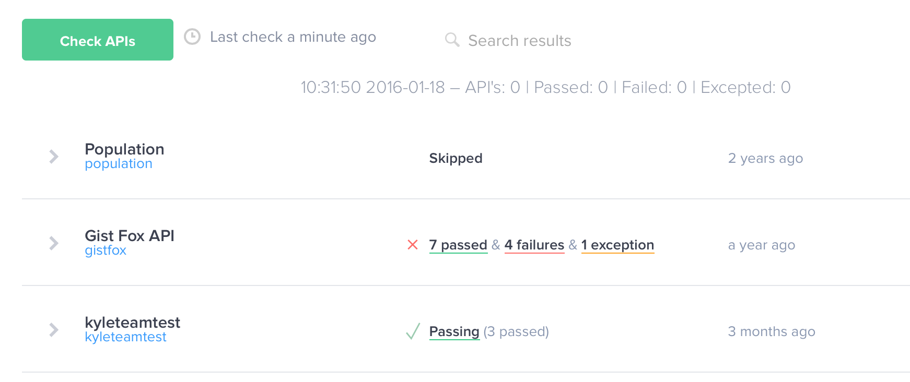
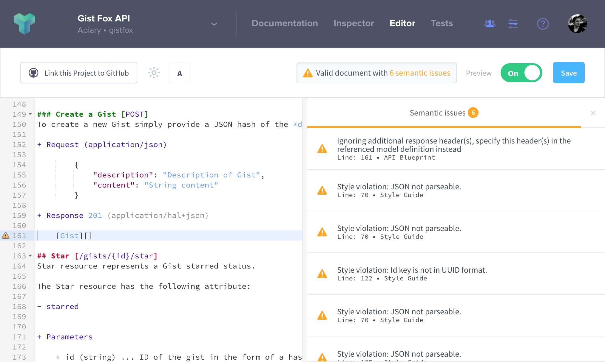
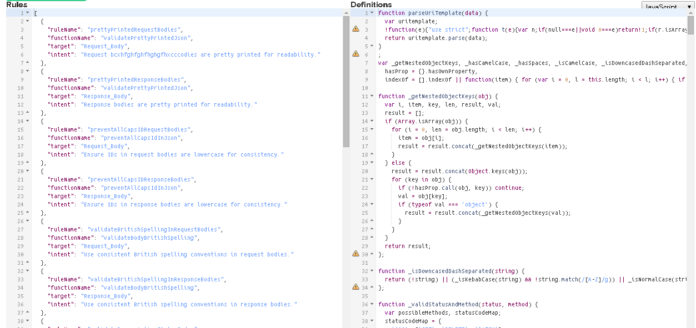
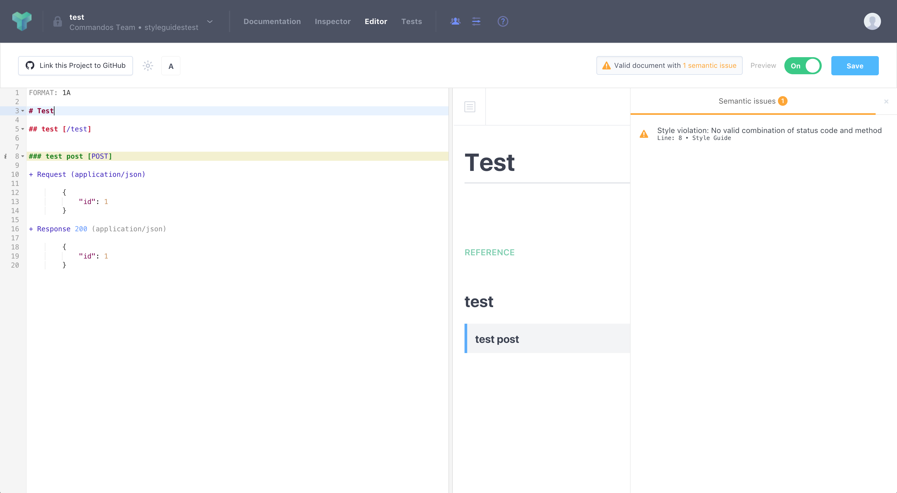

API Style Guide
API style guide helps everyone to adhere to basic API design patterns and conventions.
Apiary Style Guide enables you to check multiple API description documents for consistency. The real benefit is the developer experience—consistency means predictability. Apiary Style Guide can be used within the Apiary.io web site or using Apiary CLI.

With Apiary Style Guide, API designers receive real-time feedback during the API design process.

Inconsistencies are caught very early in the cycle, helping you to avoid boring and expensive code refactor after APIs have been developed, deployed, and consumed.
API Design Assertion Language:
To a define a Design Assertion, two parts are needed: Functions Definition and Rules Definition

Functions Definition:
A set of JavaScript functions used for validations.
/*
Checks if response to DELETE request contains body
@targets: Action
@minim: true
*/
function validateDeleteNoBody(action) {
for (const transaction of action.transactions || []) {
if (lodash.get(transaction, 'request.method', '').toValue().toLocaleLowerCase() === 'delete' && lodash.get(transaction, 'request.messageBody')) {
return 'DELETE request must not have a body.';
}
}
return true;
}
Each function has one input parameter - minim element if @minim: true annotation is present or
(deprecated) JSON object found on desired path in refract tree. Function is not executed if no object is found.
The function must return true if validation passes or a string which describes reason of failure if validation fails.
Each function should have a block comment which describes its purpose. Comments can contain @targets annotations with comma-separated lists of
allowed targets to which this function can be applied.
All supported targets are allowed if @targets annotation is not defined:
Supported targets
api
meta
title
copy
resourceGroup
resourceGroup.title
resourceGroup.copy
resource
resource.title
resource.copy
resource.href
resource.hrefVariables
transition
transition.title
transition.method
transition.copy
transition.hrefVariables
transition.requestAndResponse
request
request.copy
request.messageBody
request.messageBodySchema
request.headers
request.header
response
response.statusCode
response.copy
response.messageBody
response.messageBodySchema
response.headers
response.header
header
Rules Definition:
A list of rules connecting function definitions to minim elements targets.
Each rule has the following attributes:
intent: intent/description of this ruleruleName: human readable name for rulefunctionName: function name from the function definitiontarget: Minim/Refract Path
[
{
"intent": "All `id` keys in request JSON body object should be in format of UUID because ...",
"ruleName": "request UUID id",
"functionName": "validateUUIDInJsonIdKeys",
"target": "Request_Body"
},
{
"intent": "All `id` keys in response JSON body object should be in format of UUID because ...",
"ruleName": "response UUID id",
"functionName": "validateUUIDInJsonIdKeys",
"target": "Response_Body"
}
]
Real world example
We need to make sure that all APIs use the defined combination of request method and response status code for all API endpoints. Valid combinations would be:
- 200: GET, DELETE, PATCH
- 201: POST
- 202: POST, DELETE, PATCH
- 206: GET
Set up environment:
- install Apiary CLI
- get and set Authentication Token
Create examples
Create example API description documents that should pass and fail for your style guide - notice the POST request and 200 response combination:
FORMAT: 1A
# test FAIL
## test [/test]
### test post [POST]
+ Request (application/json)
{
"id": 1
}
+ Response 200 (application/json)
{
"id": 1
}
Save it to fail.apib.
FORMAT: 1A
# test PASS
## test [/test]
### test post [POST]
+ Request (application/json)
{
"id": 1
}
+ Response 201 (application/json)
{
"id": 1
}
Save it to pass.apib.
The more examples you create the better.
Develop a validation function:
We should choose the correct target at first. The Action target
seems to be the most suitable for this style guide as we need to know/compare the request method and the response status code
(Action element is the parent element of the Request and Response elements) and set up the rule:
json
[
{
"functionName": "validateProperActionStatusCode",
"target": "Action"
}
]
Save it to rules.json file
And create the validation function itself (notice the code comments):
/*
helper function which validates correct combination of method and status code
*/
function _validStatusAndMethod(status, method) {
//define valid combinations
const statusCodeMap = {
200: ['GET', 'DELETE', 'PATCH'],
201: ['POST'],
202: ['POST', 'DELETE', 'PATCH'],
206: ['GET'],
};
//lets convert input to primitives if it is a minim element
if (status && status.toValue) {
status = status.toValue();
}
if (method && method.toValue) {
method = method.toValue();
}
//look up in statusCodeMap and return true if given status and method is valid combination
if (statusCodeMap[status] === undefined) { return false; }
if (statusCodeMap[status].includes(method)) { return true; }
return false;
}
// Validation function itself
/*
Validates proper combinations of request method and response status code.
Possible combinations are:
- 200: GET, DELETE, PATCH
- 201: POST
- 202: POST, DELETE, PATCH
- 206: GET
we'll specify `Action` as one and only allowed target because following code does not makes sense or would fail for any other target
@targets: Action
@minim: true
*/
function validateProperActionStatusCode(action) {
//iterate over all transactions for given Action
for (const transaction of action.transactions || []) {
//check status code and method using helper method defined above.
//notice that lodash lib. is provided but you are not allowed to require/import any other libraries
if (!_validStatusAndMethod(lodash.get(transaction, 'response.statusCode'), lodash.get(transaction, 'request.method'))) {
//return string describing reason of failing if validation has failed
return 'No valid combination of status code and method';
}
}
//return true if all validations have passed
return true;
}
Save it to functions.js file
Lets test it!
apiary styleguide --add=pass.apib
All tests have passed
We should get exit code 0 and All tests has passed success message.
apiary styleguide --add=fail.apib
validateProperActionStatusCode
[X] FAILED: Action #0 on lines 7 - 19 - `No valid combination of status code and method`
We can also get the json output (for further machine processing) by specifying the --json parameter
apiary styleguide --add=fail.apib --json
We should get a verbose json output with all the available information included.
[
{
"functionName": "validateProperActionStatusCode",
"target": "Action",
"code": "function validateProperActionStatusCode(action) {\n //iterate over all transaction for given Action\n for (const transaction of action.transactions || []) {\n //check status code and method using helper method defined above.\n //notice that lodash lib. is provided but you are not allowed to require/import any other libraries\n if (!_validStatusAndMethod(lodash.get(transaction, 'response.statusCode'), lodash.get(transaction, 'request.method'))) {\n //return string describing reason of failing if validation has failed\n return 'No valid combination of status code and method';\n }\n }\n //return true if all validations has passed\n return true;\n}",
"functionComment": " Validation function it self\nValidates proper combinations of request method and response status code.\nPossible combinations are:\n- 200: GET, DELETE, PATCH\n- 201: POST\n- 202: POST, DELETE, PATCH\n- 206: GET\n\nwe'll specify `Action` as one and only allowed targets because following code does not makes sense or would fail for any other target\n@targets: Action\n@minim: true\n",
"allowedPaths": [
"Action"
],
"minim": true,
"ref": [
"Action-0"
],
"results": [
{
"validatorError": false,
"result": "No valid combination of status code and method",
"path": "Action-0",
"data": { ...truncated... },
"sourcemap": [
[
43,
168
]
],
"sourcemapLines": {
"start": 7,
"end": 19
}
}
]
}
]
Notice the result key in results array - we just need to see if validation has passed or not.
If you are satisfied, you can add the new rule and function(s) to the Apiary style guides for your team by navigating to Team settings -> Styles -> Assertions -> Advanced mode. The rule is applied for all team APIs from this moment:
